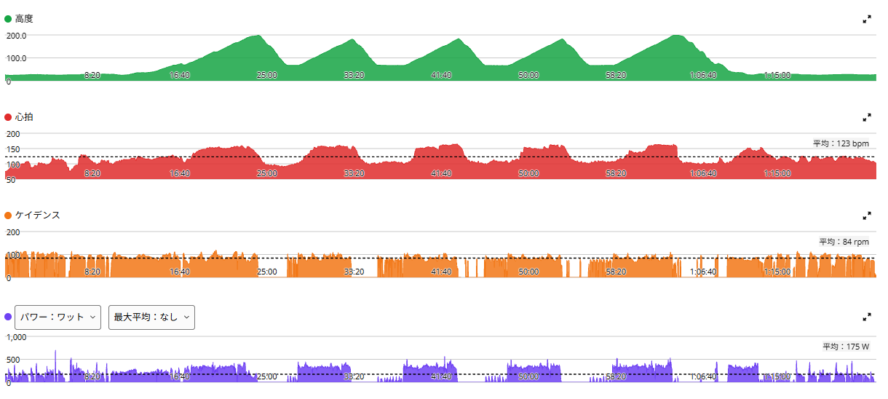
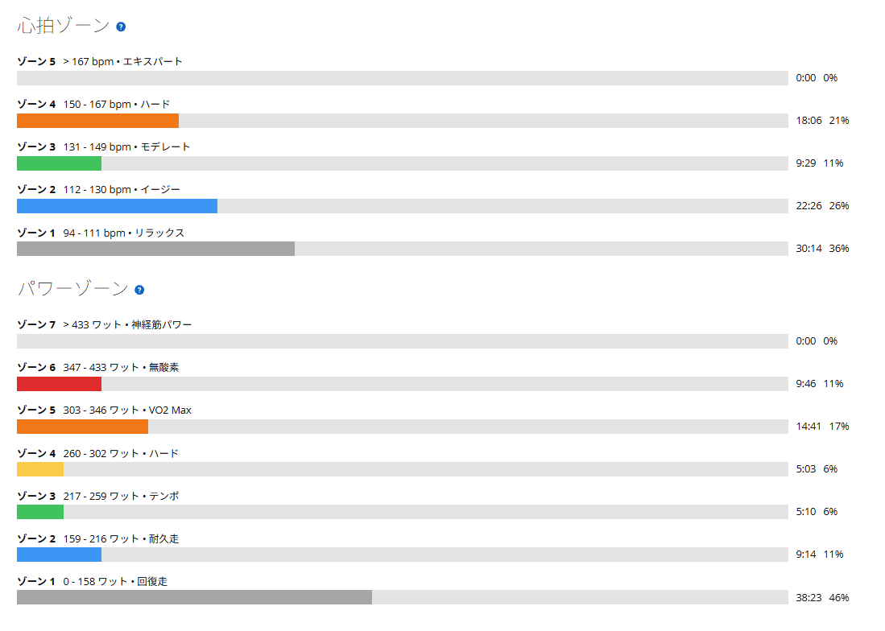
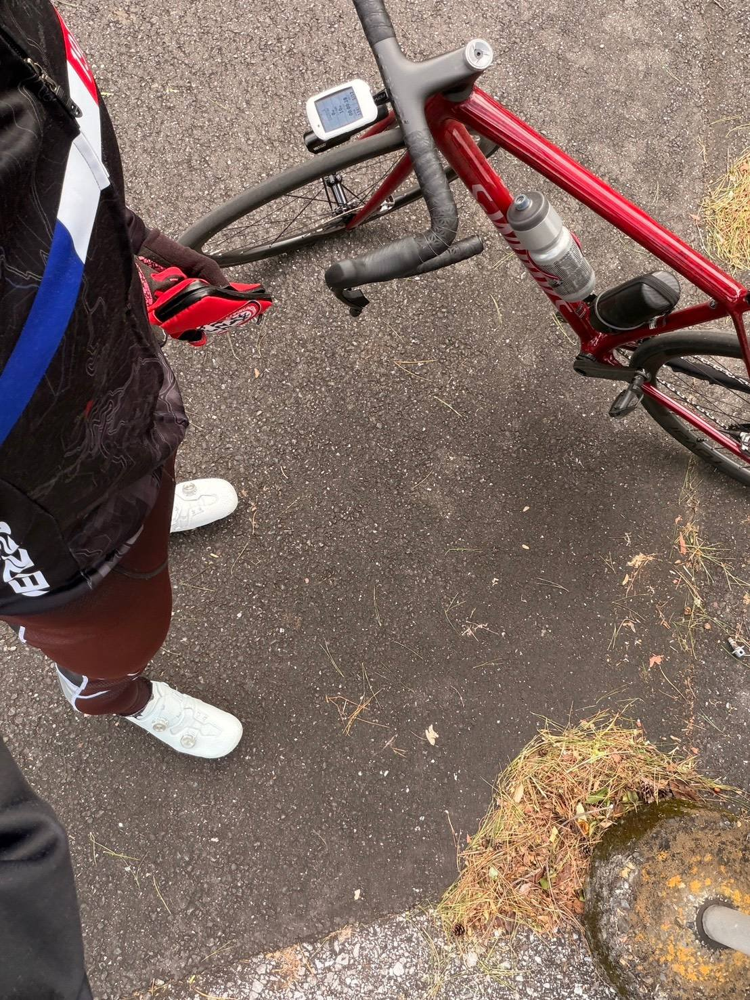

唐沢ゴルビー。古峰ヶ原で覚えた「重いギアで踏む感覚」が少し生きている気がする
今日は唐沢でゴルビー。ここ数日は、SST20分×3本、ベース走60分、そしてまたSSTと、高めの出力を長く維持する練習を続けてきた。その流れの中で、今日は5分の高強度を繰り返す日である。最近は気温もかなり下がってきたので、最初から無理に上げすぎず、1本目は320W前後から入ることにした。

約30km・NP259W・TSS111
- 全体30.32km / 1時間23分12秒 / 獲得685m / 平均気温12.9℃ / 運動量876kJ
- 負荷平均175W / NP259W / IF0.897 / TSS110.9 / FTP設定289W
- 心拍・回転平均123bpm / 最大165bpm / 平均84rpm
- 効果有酸素TE3.8 / 無酸素TE1.9 / 運動負荷197
321Wで入って、最後が一番高い
- 1本目5分07秒 / 321W / 心拍平均150bpm / 90rpm
- 2本目5分01秒 / 332W / 心拍平均146bpm / 89rpm
- 3本目5分01秒 / 337W / 心拍平均146bpm / 86rpm
- 4本目5分01秒 / 335W / 心拍平均142bpm / 86rpm
- 5本目（頂上まで）5分39秒 / 341W / 心拍平均142bpm / 85rpm
1本目を321Wで抑えて入り、後半は330W台、頂上までの5本目が341W。落ちるどころか、最後が一番高かった。321WでもFTP289Wの約111％なので、十分ゴルビーの強度である。そこから後半に330W台へ上げれば、練習としてもしっかり成立する。今日の数字だけ見れば、かなりいい感じだ。

最近のゴルビーと並べてみる
- 10月13日（Aethos2）316W / 325W / 324W / 334W / 351W ・24.1℃
- 10月16日（ANCHOR・参考）303W / 328W / 325W / 330W / 329W
- 今日321W / 332W / 337W / 335W / 341W ・12.9℃
1〜4本目の平均は、10月13日が約325W、今日が約331W。気温は24℃から13℃まで下がったのに、前半4本は今日の方が上だった。一方で、頂上までの5本目は10月13日の351W・約5分20秒の方が上。今日は341W・約5分40秒である。今日の方が少し長く登っているので単純には比べられないが、ここは上回れなかった。

古峰ヶ原の「重いギア」が、少し残っている
最近、少し変わってきた感覚がある。この前の古峰ヶ原で、後半の急勾配を重いギアで踏み続けた。インナーローまで使って、それでもギリギリ。腰も疲れるし、脚も重くなる。でも、とにかくトルクをかけて踏み続ける。あのときの感覚が、最近のローラーや今回の唐沢でも少し生きている気がする。
ただ回すだけではなく、「重いギアをしっかり踏む」というイメージが前より強くなった。今回も、無理に回転を上げて出力を出すというより、しっかりギアをかけて踏んでいく感じ。それで後半まで出力が落ちなかったのは、少し収穫だった。実際、ケイデンスは90rpmから85rpmへ下がりながら、出力は上がっていた。
5W/kgの人たちは、別世界
最近、富士ヒルでプラチナを取る人の走りを見ていて、5W/kg前後で長く踏む人がいるという話を見た。今の体重72kgなら、5W/kgは360W。今日の5本目の341Wで約4.7W/kgである。これでも、かなり頑張っている感覚だ。5分ならもう少し上を出せる場面もあるかもしれない。でも、それを富士ヒルの時間ずっと維持するのは、まったく別の世界。見ていて、単純にすげえなと思う。
自分は今、5分で高く出すことより、高い出力をどこまで長く維持できるかを鍛えている途中である。
冬用ビブと、少し薄手の上

今日の平均気温は12.9℃。かなり寒くなってきた。最近は膝や下半身が冷えるとあまり良くない感じがするので、冬用のビブを履いている。その代わり、上半身は少し薄手。この組み合わせが、今のところちょうどいい。下半身は冷やさない。でも、登りで上半身が暑くなりすぎないようにする。唐沢みたいに、登りで体温が上がって下りで一気に冷えるコースでは、このバランスがかなり大事だと感じる。写真を撮った唐沢山頂も、もうかなり秋が深くなってきた雰囲気だった。
少しずつ、踏める時間を伸ばす
今日は、数字としてもかなり満足できるゴルビーだった。最初から飛ばさずに入ったことで、結果的に後半までしっかり踏めた。そして、古峰ヶ原で覚えた「重いギアで踏み続ける感覚」が、少しずつ普段の練習にも混ざってきている気がする。5W/kgを長時間維持するような世界はまだ遠い。でも、今は今のやることを続けるだけ。SST、ベース、ゴルビー、実走。その中で、少しずつ踏める時間を伸ばしていく。